3-izbový byt 80m2 | I. Bukovčana - DNV
Devínska Nová Ves, Bratislava
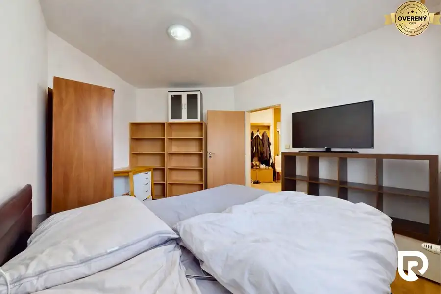
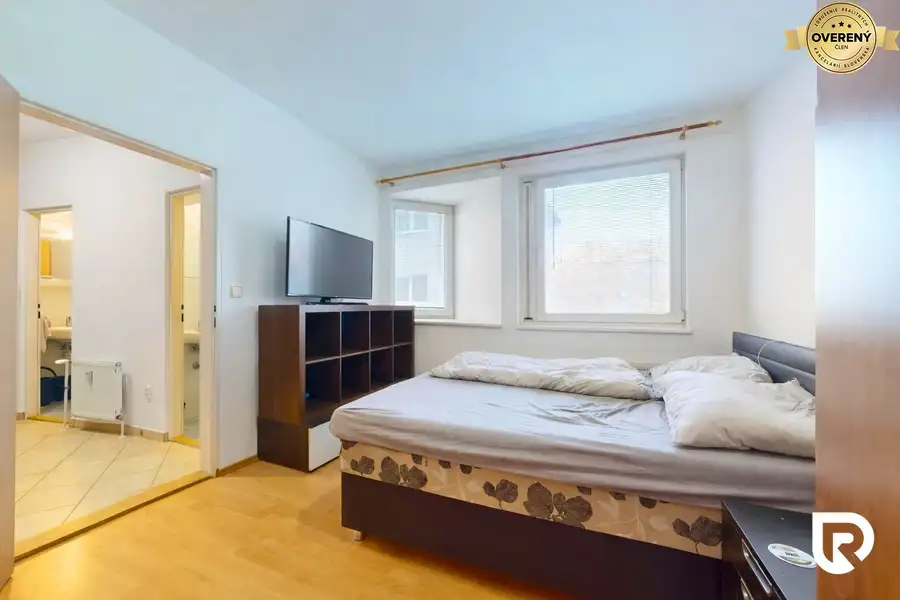
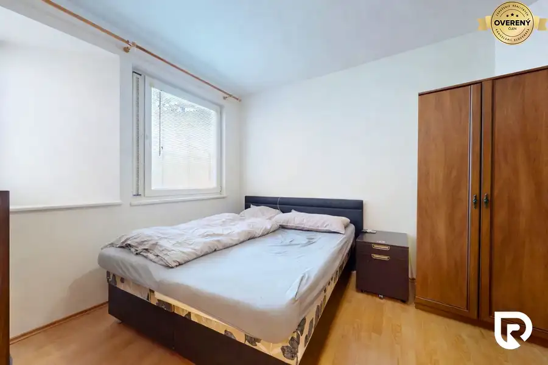
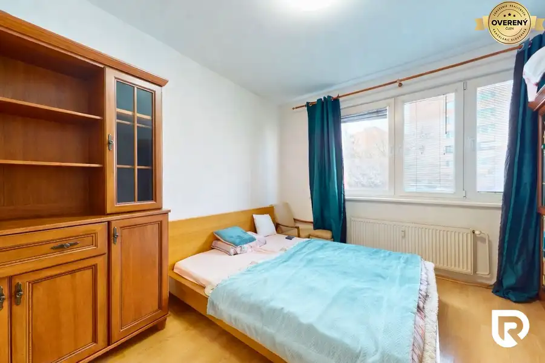
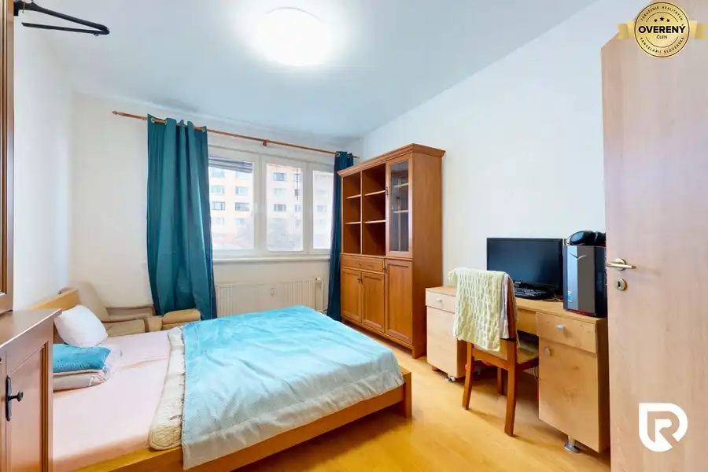
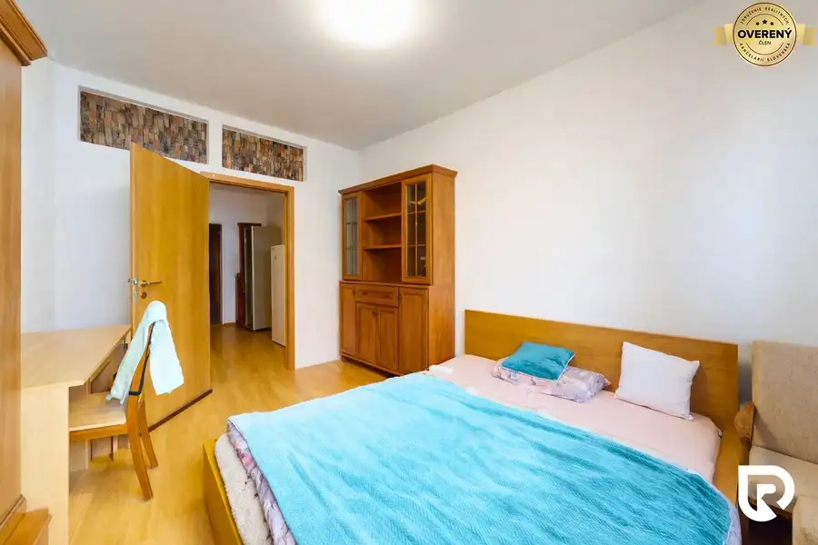
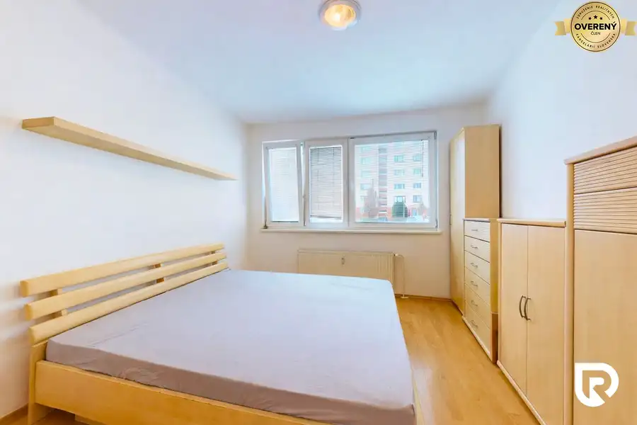
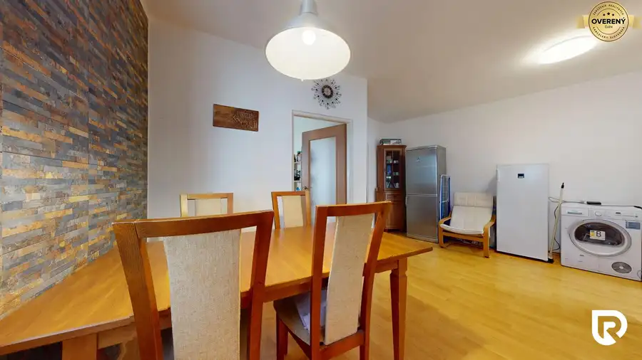
- Dispozícia3-izbový
- Plocha77 m²
- Poschodie1. z 7
- Stavčiastočne prerobený
- Vlastníctvoosobné
O nehnuteľnosti
RADOReality
Vám ponúka na predaj
4-izbový byt
s celkovou výmerou 80 m², ktorý sa nachádza v zateplenom tehlovom bytovom dome na 1. poschodí zo 7, v pokojnej a
dobre dostupnej lokalite
.
DISPOZÍCIA:
Samotný byt ponúka praktickú dispozíciu so 3 plnohodnotnými nepriechodnými spálňami, čo z neho robí ideálnu voľbu pre rodinu.
Vďaka orientácii na dve svetové strany a oknám v každej miestnosti vrátane kúpeľne je byt veľmi dobre prevetrateľný, takže príjemnú klímu v byte dosiahnete aj bez potreby klimatizácie.
Zároveň byt ponúka aj zaujímavý investičný potenciál, keďže drobnou stavebnou úpravou je možné byt prakticky rozdeliť na dve bytové jednotky – garsonku a veľký 3-izbový byt, ktoré je možné samostatne využívať napríklad na prenájom.
“
Poprechádzajte” sa po byte z pohodlia domova:
https://my.matterport.com/show/?m=Yh1kzqWGC4j
BYTOVÝ DOM:
Bol postavený v roku 2006 a aj dnes pôsobí
nadčasovo
vďaka kvalitnej tehlovej konštrukcii, zatepleniu a dobre riešeným spoločným priestorom. V celom objekte je
kamerový systém
s nepretržitým monitoringom 24/7, napojený
priamo na mestskú políciu
, čo výrazne zvyšuje bezpečnosť bývania. Vstup do bytového domu je riešený čipovým systémom, pričom každý čip je priradený ku
konkrétnemu poschodiu
. Veľkým benefitom je tiež
neobmedzené parkovanie
v okolí bytového domu.
MODERNIZÁCIA:
Byt prešiel
čiastočnou modernizáciou
– interiér bol nanovo vymaľovaný, v kuchyni je úplne nová varná doska, okná boli repasované a doplnené o bezpečnostné prvky, ktoré zvyšujú komfort bývania najmä vzhľadom na nižšie podlažie. Samozrejmosťou sú bezpečnostné vstupné dvere. Praktickým detailom je aj umývadlo priamo v samostatnom WC, ktoré zvyšuje každodenný komfort.
NÁKLADY:
Mesačné náklady na bývanie sú približne 230€ pre tri osoby vrátane všetkých poplatkov, pričom majitelia pravidelne evidovali aj preplatky.
OBČIANSKA VYBAVENOSŤ:
V okolí nájdete potraviny, supermarkety Lidl a Tesco, reštaurácie, kaviarne, lekáreň, zdravotné stredisko, banky, materské a základné školy, detské ihriská aj športoviská. Lokalita má zároveň výbornú dostupnosť do centra Bratislavy vďaka MHD a ponúka aj množstvo možností na oddych v prírode – v blízkosti sa nachádza Devínska Kobyla, Sandberg, cyklotrasy a turistické chodníky.
V prípade záujmu o detailnejšie informácie alebo obhliadku nehnuteľností ma neváhajte kontaktovať:
Rastislav Horňák
RADO Reality Group
Tel.:
E-mail:
Uvedená cena je konečná, pokiaľ sa zmluvné strany nedohodnú inak a nenavyšuje sa o odmenu sprostredkovateľa, v cene je zahrnuté právne poradenstvo, vyhotovenie kúpnych zmlúv, hypotekárne poradenstvo a uhradenie správneho poplatku za návrh na vklad do katastra nehnuteľností.
RADO Reality Group je ocenená Realitnou úniou ako najlepšia realitná kancelária na Slovensku za rok 2022. Okrem iného sme držiteľmi ďalších 6 prestížnych ocenení.
Parametre
- Celková rozloha
- 80 m²
- Úžitková plocha
- 77 m²
- Poschodie
- 1/vyššie poschodie
- Počet poschodí
- 7
- Počet izieb
- 3
- Vlastníctvo
- osobné
- Stav
- čiastočne prerobený
- Status
- aktívne
- Odvoz odpadu
- áno - separovaný
- Plyn
- nie
- Internet
- optika
- Kúpeľňa
- áno
- Vykurovanie
- spoločné
- Balkón
- nie
- Pivnica
- áno
- Výťah
- áno
- Parkovanie
- verejné
- Postavené z
- Zmiešané
- Zariadenie
- zariadený
- Zateplený objekt
- áno
- Klimatizácia
- nie
- Káblová televízia
- áno
- Energetický certifikát
- áno
- Bezbariérový prístup
- áno
- Okná
- plastové
- Orientácia
- juhozápadná
- Dátum zverejnenia
- 2026-04-22
Kde to je
Mohlo by Vás zaujímať
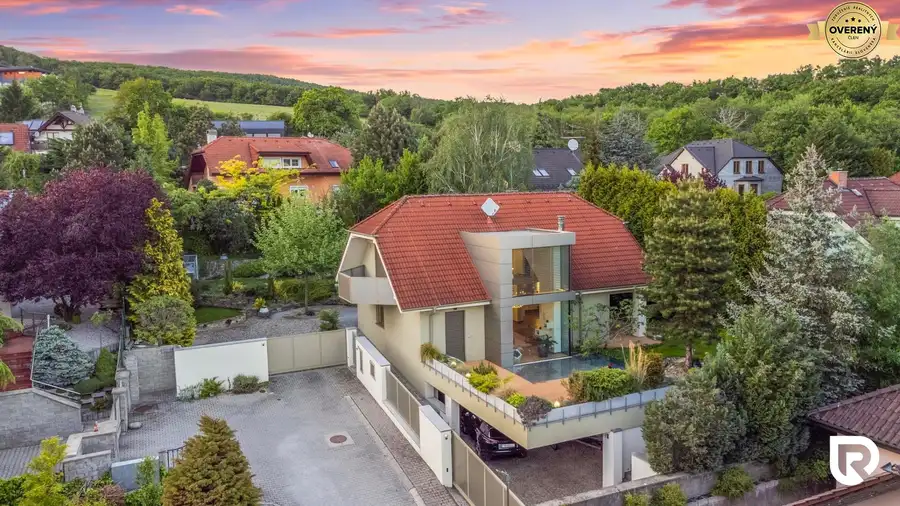
Rodinné domyNové 721 400 €4-izbový dom 390m2 + pozemok 1000m2 | Limbach Limbach 4-izbový390 m²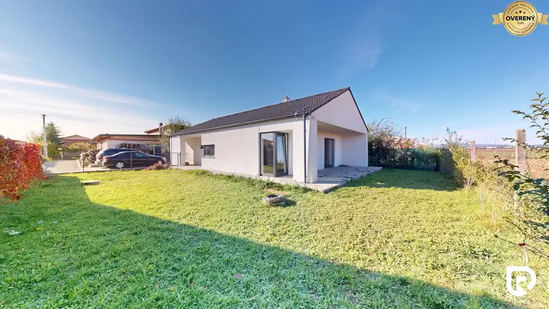
Rodinné domyNové 359 100 €4-izbový rodinný dom 108m2 + pozemok 471m2 | Senec Senec 4-izbový108 m²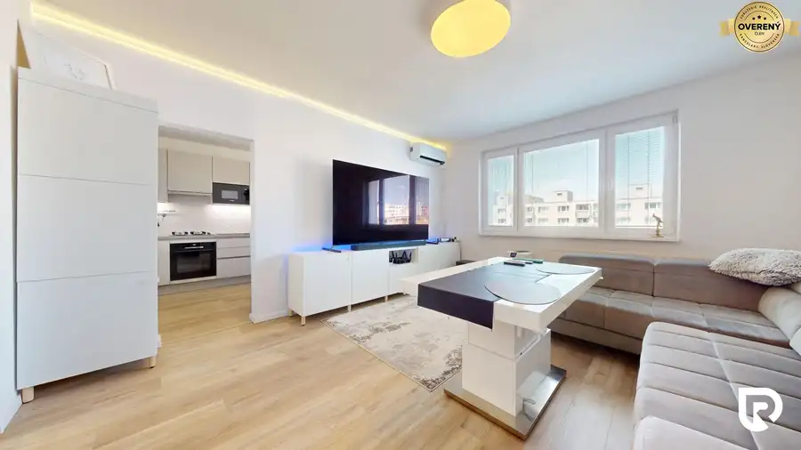
BytNové 249 000 €3-izbový byt 70m2 + loggia 3m2 | Eisnerova Devínska Nová Ves, Bratislava 3-izbový70 m²7. podlažie